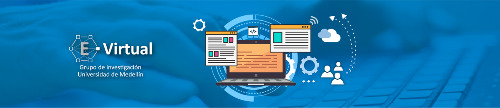
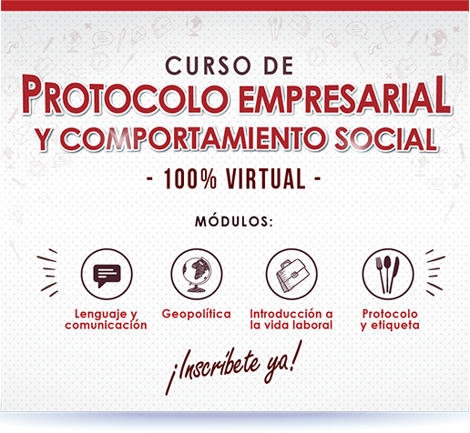
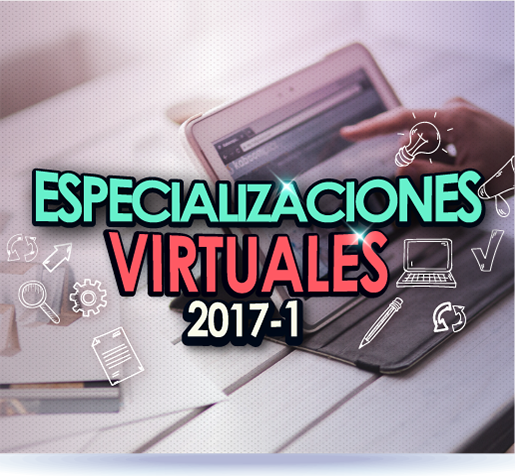
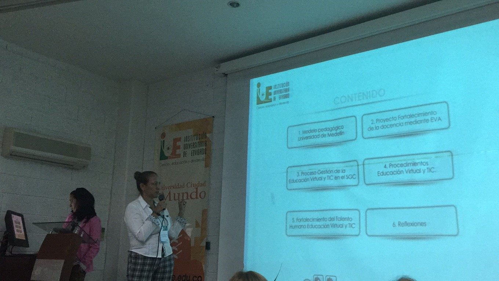
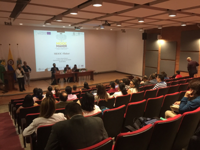
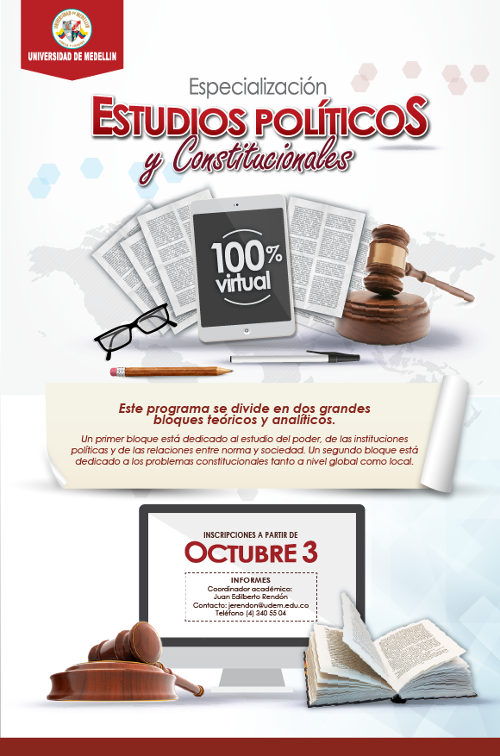

Nuevos Posgrados Virtuales
La Universidad de Medellin con apoyo de Educación Virtual y TIC, ofrece los siguientes programas de Especialización y Maestría en metodología virtual.
| Facultad | Programa | Coordinador | Correo | Teléfono | Vínculo |
| Comunicación | Maestría en Comunicación de Marca | Luisa Fernanda Montalvo Arroyave | lfmontalvo@udem.edu.co | (57)4 3405510 | Maestría en Comunicación de Marca |
| Especialización en Comunicación Estratégica para la WEB | Luisa Fernanda Montalvo Arroyave | lfmontalvo@udem.edu.co | (57)4 3405510 | Especialización en Comunicación estratégica para la WEB | |
| Ciencias Sociales y Humanas | Especialización en Estudios Políticos y Constitucionales | Juan Edilberto Rendón Ángel | jerendon@udem.edu.co | (57) 4 3405504 | Especialización en Estudios Políticos y Constitucionales |
| Maestría en Educación | Jair Hernando Álvarez Torres | jhalvarez@udem.edu.co | (57) 4 34055504 | Maestría en Educación | |
| Ingenierías | Especialización Gestión Ambiental y Producción Más Limpia | Catalina Arroyave Quiceno | carroyave@udem.edu.co | (57) 4 3405817 | Especialización Gestión Ambiental y Producción Más Limpia |
| Ingenierías-Ciencias Económico | Especialización en Responsabilidad Social y Sostenibilidad | Marisol Ochoa Bedoya | mochoa@udem.edu.co | (57) 4 3405359 | Especialización en Responsabilidad Social y Sostenibilidad |
| Derecho | Especialización en Contratación Estatal | Adriana María Gómez | amgomez@udem.edu.co | (57) 4 3405247-3405102 | Especialización en Contratación Estatal |
| Ciencias Económicas | Especialización en Mercadeo Gerencial | Luisa Fernanda Gaviria Martínez | lugaviria@udem.edu.co | (57) 4 3405244 |
Noticias

Nuevos Posgrados Virtuales
La Universidad de Medellin con apoyo de Educación Virtual y TIC, ofrece los siguientes programas...
Diplomado en Notariado y Registro
Treinta y siete (37) funcionarios de la Superintendencia de Notariado y Registro...
Curso de Protocolo Empresarial y Comportamiento Social

Para cumplir la política institucional de implementar las Tecnologías de la Información y la Comunicación en los programas de pregrado y posgrado...
Curso de Tratamiento de Datos Personales
Como parte del proyecto para la Implementación de la Política de Tratamiento de datos en la Universidad de Medellín, se diseñó e implementó un plan...
Especializaciones Virtuales
2017-1

La Facultad de Derecho y la Facultad de Ciencias Sociales y Humanas con el apoyo de Educación Virtual y TIC de la Universidad de Medellín, ofrecen para el semestre 2017-1...
III Foro de Virtualidad: Las TIC: Una propuesta integral...

El grupo de trabajo de Educación Virtual y TIC de la Universidad de Medellín participó el pasado 28 de septiembre de 2016 en el III Foro de Virtualidad...
Educación Virtual y TIC apuesta por los MOOC

Actualmente los MOOC (Masive Online Open Courses) han evolucionado los métodos de enseñanza tradicionales, permitiendo a las personas conectarse a través de cualquier dispositivo...
Lanzamiento Especialización en Estudios Políticos...

La Universidad de Medellín por medio del Departamento de Ciencias Sociales y Humanas se complace en anunciarle a toda la comunidad...